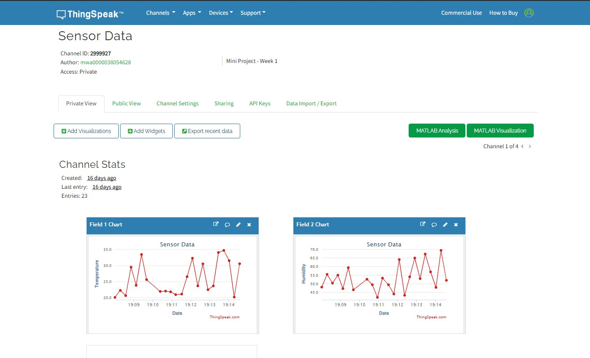

Cloud computing is a model for delivering computing services like storage, databases, networking, software, analytics, and intelligence over the internet, offering faster innovation, flexible resources, and economies of scale.
Cloud computing is a model for delivering computing services like storage, databases, networking, software, analytics, and intelligence over the internet, offering faster innovation, flexible resources, and economies of scale.
| Aspect | Traditional Computing | Distributed Computing |
|---|---|---|
| Structure | Centralized | Multiple nodes across networks |
| Scalability | Limited | Highly Scalable |
| Failure Handling | Single point of failure | Redundant and fault-tolerant |
| Use Cases | Personal apps, small-scale systems | Cloud, big data, global services |
Distributed computing is a field of computer science that studies distributed systems. In these systems, a group of computers works together, appearing to the end-user as a single coherent system.
Goals: Transparency, scalability, resource sharing, reliability.
Challenges: Synchronization, security, fault tolerance, consistency.
A model where client devices send requests to a server, which processes and returns results. Widely used in web services.
Cluster Computing: Multiple computers work together as a single system.
Grid Computing: Distributed resources across locations solving a common task.
Utility Computing: Resources used on a pay-per-use model.
Cloud Computing: On-demand access to computing services over the internet.
Virtualisation allows multiple operating systems to run on a single physical machine using software like hypervisors. It improves resource utilization and flexibility.
Cloud platforms help IoT devices send/receive data, analyze it, and provide services like remote monitoring and updates.
| Provider | Language | Storage | Services |
|---|---|---|---|
| Google App Engine | Python, Java, Go | Cloud Storage | Firebase, App Hosting |
| Microsoft Azure | .NET, Java | Blob Storage | VMs, Azure Functions |
| AWS | Java, Python | S3 | EC2, Lambda |
ThingSpeak: An open IoT platform for data collection and visualization using MATLAB analytics.
Examples: